Conditional ProbabilityXác suất có điều kiện
Grade 12 · Topic: Conditional ProbabilityLớp 12 · Chủ đề: Xác suất có điều kiện
1Lesson IntroductionGiới thiệu bài học
Learning goalsMục tiêu bài học
By the end of this lesson you can:
Sau bài học này, em có thể:
understand what "the probability of \(A\) given \(B\)" means;
hiểu ý nghĩa của xác suất có điều kiện "\(A\) khi biết \(B\)";
compute \(P(A\mid B)\) by the formula or by counting in the reduced sample space;
tính \(P(A\mid B)\) bằng công thức hoặc bằng cách đếm trên không gian mẫu thu hẹp;
use the multiplication rule for successive draws and recognize independent events;
dùng công thức nhân xác suất cho các lần lấy liên tiếp và nhận biết hai biến cố độc lập;
interpret conditional probabilities in surveys and medical tests.
giải thích xác suất có điều kiện trong khảo sát và xét nghiệm y tế.
2Mathematical VocabularyTừ vựng Toán học
conditional probability – the probability of \(A\) given that \(B\) has happened: \(P(A\mid B)=\dfrac{P(A\cap B)}{P(B)}\) (\(P(B)\gt0\)).
xác suất có điều kiện – xác suất của \(A\) khi biết \(B\) đã xảy ra: \(P(A\mid B)=\dfrac{P(A\cap B)}{P(B)}\) (\(P(B)\gt0\)).
multiplication rule – \(P(A\cap B)=P(B)\cdot P(A\mid B)=P(A)\cdot P(B\mid A)\).
công thức nhân xác suất – \(P(A\cap B)=P(B)\cdot P(A\mid B)=P(A)\cdot P(B\mid A)\).
independent events – \(A\), \(B\) with \(P(A\cap B)=P(A)P(B)\); equivalently \(P(A\mid B)=P(A)\).
hai biến cố độc lập – \(A\), \(B\) thỏa \(P(A\cap B)=P(A)P(B)\); tương đương \(P(A\mid B)=P(A)\).
without replacement – a drawn object is not put back, so the second draw depends on the first.
không hoàn lại – vật đã lấy không được trả lại, nên lần lấy sau phụ thuộc lần lấy trước.
3Useful English PhrasesCụm từ tiếng Anh thường gặp
The probability of \(A\) given \(B\).
Xác suất của \(A\) với điều kiện \(B\).
We know that \(B\) has happened.
Ta biết \(B\) đã xảy ra.
The sample space shrinks to \(B\).
Không gian mẫu thu hẹp thành \(B\).
The balls are drawn without replacement.
Các viên bi được lấy không hoàn lại.
The two events are independent.
Hai biến cố độc lập.
4Prerequisite ReviewÔn tập kiến thức nền
Grade 10–11: classical probability \(P(A)=\dfrac{n(A)}{n(\Omega)}\); \(P(\overline A)=1-P(A)\); \(P(A\cup B)=P(A)+P(B)-P(A\cap B)\); for independent \(A,B\): \(P(A\cap B)=P(A)P(B)\).
Lớp 10–11: định nghĩa cổ điển \(P(A)=\dfrac{n(A)}{n(\Omega)}\); \(P(\overline A)=1-P(A)\); \(P(A\cup B)=P(A)+P(B)-P(A\cap B)\); với \(A,B\) độc lập: \(P(A\cap B)=P(A)P(B)\).
5TheoryLý thuyết
5.1 Conditional probabilityXác suất có điều kiện
DefinitionĐịnh nghĩa
For events \(A\), \(B\) with \(P(B)\gt0\), the probability of \(A\) given \(B\) is \[P(A\mid B)=\dfrac{P(A\cap B)}{P(B)}.\] With equally likely outcomes: \(P(A\mid B)=\dfrac{n(A\cap B)}{n(B)}\) – we count only inside \(B\) (the reduced sample space).
Cho hai biến cố \(A\), \(B\) với \(P(B)\gt0\). Xác suất của \(A\) với điều kiện \(B\) là \[P(A\mid B)=\dfrac{P(A\cap B)}{P(B)}.\] Khi các kết quả đồng khả năng: \(P(A\mid B)=\dfrac{n(A\cap B)}{n(B)}\) – chỉ đếm trong \(B\) (không gian mẫu thu hẹp).
| Likes footballThích bóng đá | Does notKhông thích | TotalTổng | |
|---|---|---|---|
| BoysNam | 25 | 15 | 40 |
| GirlsNữ | 15 | 45 | 60 |
| TotalTổng | 40 | 60 | 100 |
In this survey, \(P(\text{likes})=\dfrac{40}{100}=0.4\), but \(P(\text{likes}\mid\text{girl})=\dfrac{15}{60}=0.25\) and \(P(\text{likes}\mid\text{boy})=\dfrac{25}{40}=0.625\): knowing the group changes the probability.
Trong khảo sát này \(P(\text{thích})=\dfrac{40}{100}=0{,}4\), nhưng \(P(\text{thích}\mid\text{nữ})=\dfrac{15}{60}=0{,}25\) và \(P(\text{thích}\mid\text{nam})=\dfrac{25}{40}=0{,}625\): biết thêm nhóm thì xác suất thay đổi.
PropertiesTính chất
\(0\le P(A\mid B)\le1\); \(P(\overline A\mid B)=1-P(A\mid B)\).
\(0\le P(A\mid B)\le1\); \(P(\overline A\mid B)=1-P(A\mid B)\).
In general \(P(A\mid B)\ne P(B\mid A)\) and \(P(A\mid B)\ne P(A\cap B)\).
Nói chung \(P(A\mid B)\ne P(B\mid A)\) và \(P(A\mid B)\ne P(A\cap B)\).
5.2 Multiplication rule and independenceCông thức nhân xác suất và tính độc lập
Multiplication ruleCông thức nhân
\(P(A\cap B)=P(B)\cdot P(A\mid B)=P(A)\cdot P(B\mid A)\). For three events: \(P(A\cap B\cap C)=P(A)P(B\mid A)P(C\mid A\cap B)\) (successive draws without replacement).
\(P(A\cap B)=P(B)\cdot P(A\mid B)=P(A)\cdot P(B\mid A)\). Với ba biến cố: \(P(A\cap B\cap C)=P(A)P(B\mid A)P(C\mid A\cap B)\) (lấy liên tiếp không hoàn lại).
IndependenceTính độc lập
\(A\), \(B\) (\(P(B)\gt0\)) are independent \(\iff P(A\mid B)=P(A)\iff P(A\cap B)=P(A)P(B)\): knowing \(B\) does not change the chance of \(A\).
\(A\), \(B\) (\(P(B)\gt0\)) độc lập \(\iff P(A\mid B)=P(A)\iff P(A\cap B)=P(A)P(B)\): biết \(B\) không làm thay đổi khả năng của \(A\).
Watch out!Lưu ý
Do not confuse \(P(A\mid B)\) with \(P(B\mid A)\): "the probability that a person who tests positive is sick" is very different from "the probability that a sick person tests positive" (Example 5). With replacement the draws are independent; without replacement they are not.
Đừng nhầm \(P(A\mid B)\) với \(P(B\mid A)\): "xác suất người xét nghiệm dương tính bị bệnh" khác xa "xác suất người bệnh xét nghiệm dương tính" (Ví dụ 5). Lấy có hoàn lại thì các lần lấy độc lập; không hoàn lại thì không.
6Worked ExamplesVí dụ có lời giải
ExampleVí dụ 1BasicCơ bản – Reading a tableĐọc bảng số liệu
Use the survey table above. A student is chosen at random.
a) Given that it is a girl, find the probability that she likes football.
b) Given that the student likes football, find the probability that it is a girl.
Dùng bảng khảo sát ở trên. Chọn ngẫu nhiên một học sinh.
a) Biết đó là nữ, tính xác suất em thích bóng đá.
b) Biết học sinh đó thích bóng đá, tính xác suất đó là nữ.
Analysis: Count inside the given group only.
Phân tích: Chỉ đếm trong nhóm đã biết.
a) 60 girls, 15 like football: \(P=\dfrac{15}{60}=\dfrac14\).
a) 60 nữ, 15 em thích: \(P=\dfrac{15}{60}=\dfrac14\).
b) 40 like football, 15 are girls: \(P=\dfrac{15}{40}=\dfrac38\).
b) 40 em thích, 15 em là nữ: \(P=\dfrac{15}{40}=\dfrac38\).
a) \(\dfrac14\);
b) \(\dfrac38\) – the two conditional probabilities are different.
a) \(\dfrac14\);
b) \(\dfrac38\) – hai xác suất có điều kiện khác nhau.
ExampleVí dụ 2BasicCơ bản – Two diceGieo hai xúc xắc
Two dice are rolled. Given that the sum is 8, find the probability that the first die shows 3.
Gieo hai con xúc xắc cân đối. Biết tổng số chấm bằng 8, tính xác suất con thứ nhất ra 3 chấm.
Analysis: List \(B\): sum 8.
Phân tích: Liệt kê \(B\): tổng bằng 8.
\(B=\{(2;6),(3;5),(4;4),(5;3),(6;2)\}\), \(n(B)=5\).
\(B=\{(2;6),(3;5),(4;4),(5;3),(6;2)\}\), \(n(B)=5\).
\(A\cap B=\{(3;5)\}\): \(P(A\mid B)=\dfrac15\).
\(A\cap B=\{(3;5)\}\): \(P(A\mid B)=\dfrac15\).
\(\dfrac15\) (without the condition it would be \(\dfrac16\)).
\(\dfrac15\) (không có điều kiện thì là \(\dfrac16\)).
ExampleVí dụ 3IntermediateTrung bình – Drawing without replacementLấy không hoàn lại
A box has 5 red and 3 blue balls. Two balls are drawn one after the other without replacement.
a) Given that the first is red, what is the probability that the second is red?
b) Find the probability that both are red.
Hộp có 5 bi đỏ và 3 bi xanh. Lấy lần lượt 2 bi không hoàn lại.
a) Biết bi thứ nhất màu đỏ, tính xác suất bi thứ hai màu đỏ.
b) Tính xác suất cả hai bi đều đỏ.
Analysis: After the first red ball, 4 red remain among 7.
Phân tích: Sau khi lấy bi đỏ đầu tiên còn 4 đỏ trong 7 bi.
a) \(P(B\mid A)=\dfrac47\).
a) \(P(B\mid A)=\dfrac47\).
b) \(P(A\cap B)=P(A)P(B\mid A)=\dfrac58\cdot\dfrac47=\dfrac5{14}\).
b) \(P(A\cap B)=P(A)P(B\mid A)=\dfrac58\cdot\dfrac47=\dfrac5{14}\).
a) \(\dfrac47\);
b) \(\dfrac5{14}\).
a) \(\dfrac47\);
b) \(\dfrac5{14}\).
ExampleVí dụ 4IntermediateTrung bình – Using the formulaDùng công thức
\(P(A)=0.5\), \(P(B)=0.4\), \(P(A\cup B)=0.7\). Find \(P(A\mid B)\) and \(P(B\mid A)\). Are \(A\) and \(B\) independent?
Cho \(P(A)=0{,}5\), \(P(B)=0{,}4\), \(P(A\cup B)=0{,}7\). Tính \(P(A\mid B)\), \(P(B\mid A)\). Hai biến cố \(A\), \(B\) có độc lập không?
Analysis: Find \(P(A\cap B)\) first.
Phân tích: Tính \(P(A\cap B)\) trước.
\(P(A\cap B)=0.5+0.4-0.7=0.2\).
\(P(A\cap B)=0{,}5+0{,}4-0{,}7=0{,}2\).
\(P(A\mid B)=\dfrac{0.2}{0.4}=0.5=P(A)\); \(P(B\mid A)=\dfrac{0.2}{0.5}=0.4=P(B)\).
\(P(A\mid B)=\dfrac{0{,}2}{0{,}4}=0{,}5=P(A)\); \(P(B\mid A)=\dfrac{0{,}2}{0{,}5}=0{,}4=P(B)\).
\(0.5\); \(0.4\); yes, they are independent.
\(0{,}5\); \(0{,}4\); có, hai biến cố độc lập.
ExampleVí dụ 5AdvancedNâng cao – A medical testXét nghiệm y tế
Of 1000 people, 50 are sick. 45 of the sick and 95 of the healthy test positive.
a) Given that a person is sick, what is the probability of a positive test?
b) Given a positive test, what is the probability that the person is sick?
Trong 1000 người có 50 người bệnh. Có 45 người bệnh và 95 người khỏe xét nghiệm dương tính.
a) Biết một người bị bệnh, xác suất người đó dương tính là bao nhiêu?
b) Biết một người dương tính, xác suất người đó bị bệnh là bao nhiêu?
Analysis: Which group is given?
Phân tích: Nhóm nào đã biết?
a) \(P(+\mid\text{sick})=\dfrac{45}{50}=0.9\).
a) \(P(+\mid\text{bệnh})=\dfrac{45}{50}=0{,}9\).
b) \(45+95=140\) positive: \(P(\text{sick}\mid+)=\dfrac{45}{140}=\dfrac9{28}\approx0.32\).
b) Có \(45+95=140\) người dương tính: \(P(\text{bệnh}\mid+)=\dfrac{45}{140}=\dfrac9{28}\approx0{,}32\).
a) 0.9;
b) about 0.32 – a positive test is far from a sure diagnosis. (Bài 19: Bayes' formula.)
a) 0,9;
b) khoảng 0,32 – dương tính chưa chắc đã mắc bệnh. (Bài 19: công thức Bayes.)
7PracticeBài tập luyện tập
A. Multiple ChoiceA. Trắc nghiệm nhiều lựa chọn
\(P(B)=0.4\), \(P(A\cap B)=0.1\). \(P(A\mid B)=\)…
Cho \(P(B)=0{,}4\), \(P(A\cap B)=0{,}1\). Khi đó \(P(A\mid B)=\)…
Answer: b. \(\dfrac{P(A\cap B)}{P(B)}\).
Đáp án b. \(\dfrac{P(A\cap B)}{P(B)}=0{,}25\).
Of 20 boys, 8 wear glasses; of 20 girls, 6 wear glasses. A student wearing glasses is chosen. \(P(\text{girl})=\)…
Trong 20 nam có 8 em đeo kính; trong 20 nữ có 6 em đeo kính. Chọn một học sinh đeo kính. Xác suất đó là nữ là…
Answer: c. Among 14 with glasses, 6 are girls.
Đáp án c. Trong 14 em đeo kính có 6 em nữ.
5 red and 4 white balls; draw 2 without replacement. \(P(\text{both white})=\)…
Hộp có 5 bi đỏ và 4 bi trắng; lấy lần lượt 2 bi không hoàn lại. Xác suất cả hai bi trắng là…
Answer: b. \(\dfrac{4}{9}\cdot\dfrac{3}{8}\).
Đáp án b. \(\dfrac{4}{9}\cdot\dfrac{3}{8}\).
The tree diagram shows \(P(B)\), \(P(A\mid B)\) and \(P(A\mid\overline B)\). Find \(P(\overline B\cap A)\).
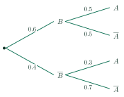
Sơ đồ hình cây cho \(P(B)\), \(P(A\mid B)\) và \(P(A\mid\overline B)\). Tính \(P(\overline B\cap A)\).
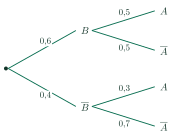
Answer: d. Multiply along the branch: \(P(\overline B\cap A)=0.12\).
Đáp án d. Nhân các xác suất dọc theo nhánh: \(P(\overline B\cap A)=0{,}12\).
A card is drawn from cards numbered 1 to 24. Given that the number is divisible by 3, the probability that it is divisible by 4 is…
Rút ngẫu nhiên một thẻ từ các thẻ đánh số 1 đến 24. Biết số trên thẻ chia hết cho 3, xác suất số đó chia hết cho 4 là…
Answer: d. \(n(B)=8\), \(n(A\cap B)=2\): \(P=0.25\).
Đáp án d. \(n(B)=8\), \(n(A\cap B)=2\): \(P=0{,}25\).
| Uses the school bus | Does not | Total | |
|---|---|---|---|
| Grade 10 | \(16\) | \(9\) | \(25\) |
| Grade 11 | \(18\) | \(9\) | \(27\) |
| Total | \(34\) | \(18\) | \(52\) |
| Đi xe buýt của trường | Không đi | Tổng | |
|---|---|---|---|
| Khối 10 | \(16\) | \(9\) | \(25\) |
| Khối 11 | \(18\) | \(9\) | \(27\) |
| Tổng | \(34\) | \(18\) | \(52\) |
Answer: d. \(P(A)=\dfrac{34}{52}=\dfrac{17}{26}\), \(P(A\mid B)=\dfrac{16}{25}=0.64\).
Đáp án d. \(P(A)=\dfrac{34}{52}=\dfrac{17}{26}\), \(P(A\mid B)=\dfrac{16}{25}=0{,}64\).
B. True or FalseB. Đúng hoặc sai
\(P(A\mid B)=P(B\mid A)\) for all events \(A\), \(B\).
\(P(A\mid B)=P(B\mid A)\) với mọi biến cố \(A\), \(B\).
They are equal only when \(P(A)=P(B)\) (or \(P(A\cap B)=0\)).
Chỉ bằng nhau khi \(P(A)=P(B)\) (hoặc \(P(A\cap B)=0\)).
If \(P(A)=0.3\), \(P(B)=0.5\), \(P(A\cap B)=0.15\) then \(A\), \(B\) are independent.
Nếu \(P(A)=0{,}3\), \(P(B)=0{,}5\), \(P(A\cap B)=0{,}15\) thì \(A\), \(B\) độc lập.
\(0.3\cdot0.5=0.15\).
\(0{,}3\cdot0{,}5=0{,}15\).
From the tree diagram, \(P(\overline A\mid B)=0.1\).
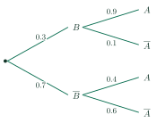
Theo sơ đồ hình cây, \(P(\overline A\mid B)=0{,}1\).
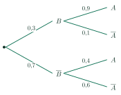
\(P(\overline A\mid B)=1-P(A\mid B)=0.1\).
\(P(\overline A\mid B)=1-P(A\mid B)=0{,}1\).
C. Short AnswerC. Trả lời ngắn
\(P(B)=0.6\), \(P(A\mid B)=0.5\). Find \(P(A\cap B)\) (decimal).
Cho \(P(B)=0{,}6\), \(P(A\mid B)=0{,}5\). Tính \(P(A\cap B)\) (viết dạng thập phân).
Enter a number.
Nhập một số.
\(P(A\cap B)=P(B)P(A\mid B)=0.6\cdot0.5=0.3\).
\(P(A\cap B)=P(B)P(A\mid B)=0{,}6\cdot0{,}5=0{,}3\).
In a survey of 500 people, 40 tested positive, of whom 30 were actually sick. Find \(P(\text{sick}\mid+)\) (decimal).
Khảo sát 500 người: 40 người dương tính, trong đó 30 người thật sự mắc bệnh. Tính \(P(\text{bệnh}\mid+)\) (viết dạng thập phân).
Enter a number.
Nhập một số.
\(\dfrac{30}{40}=0.75\).
\(\dfrac{30}{40}=0{,}75\).
| Uses the school bus | Does not | Total | |
|---|---|---|---|
| Grade 10 | \(19\) | \(7\) | \(26\) |
| Grade 11 | \(x\) | \(18\) | \(18+x\) |
| Total | \(19+x\) | \(25\) | \(44+x\) |
| Đi xe buýt của trường | Không đi | Tổng | |
|---|---|---|---|
| Khối 10 | \(19\) | \(7\) | \(26\) |
| Khối 11 | \(x\) | \(18\) | \(18+x\) |
| Tổng | \(19+x\) | \(25\) | \(44+x\) |
Enter a number.
Nhập một số.
\(\dfrac{x}{x+18}=\dfrac{2}{5}\Rightarrow x=12\).
\(\dfrac{x}{x+18}=\dfrac{2}{5}\Rightarrow x=12\).
A. Multiple ChoiceA. Trắc nghiệm nhiều lựa chọn
\(P(B)=0.5\), \(P(A\cap B)=0.2\). \(P(A\mid B)=\)…
Cho \(P(B)=0{,}5\), \(P(A\cap B)=0{,}2\). Khi đó \(P(A\mid B)=\)…
Answer: a. \(\dfrac{P(A\cap B)}{P(B)}\).
Đáp án a. \(\dfrac{P(A\cap B)}{P(B)}=0{,}4\).
Of 25 boys, 10 wear glasses; of 25 girls, 12 wear glasses. A student wearing glasses is chosen. \(P(\text{girl})=\)…
Trong 25 nam có 10 em đeo kính; trong 25 nữ có 12 em đeo kính. Chọn một học sinh đeo kính. Xác suất đó là nữ là…
Answer: d. Among 22 with glasses, 12 are girls.
Đáp án d. Trong 22 em đeo kính có 12 em nữ.
3 red and 6 white balls; draw 2 without replacement. \(P(\text{both white})=\)…
Hộp có 3 bi đỏ và 6 bi trắng; lấy lần lượt 2 bi không hoàn lại. Xác suất cả hai bi trắng là…
Answer: c. \(\dfrac{6}{9}\cdot\dfrac{5}{8}\).
Đáp án c. \(\dfrac{6}{9}\cdot\dfrac{5}{8}\).
Using the tree diagram, \(P(B\cap\overline A)=\)…
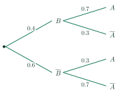
Dựa vào sơ đồ hình cây, \(P(B\cap\overline A)=\)…
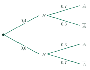
Answer: d. Multiply along the branch: \(P(B\cap\overline A)=0.12\).
Đáp án d. Nhân các xác suất dọc theo nhánh: \(P(B\cap\overline A)=0{,}12\).
Two dice are rolled. Given that the sum of the dots is 6, the probability that at least one die shows 5 is…
Gieo hai con xúc xắc cân đối. Biết tổng số chấm bằng 6, xác suất có ít nhất một con ra 5 chấm là…
Answer: b. \(n(B)=5\) outcomes with sum 6; 2 of them contain 5: \(P=0.4\).
Đáp án b. Có \(n(B)=5\) kết quả tổng 6; 2 kết quả có mặt 5: \(P=0{,}4\).
| Plays a sport | Does not | Total | |
|---|---|---|---|
| Grade 10 | \(12\) | \(10\) | \(22\) |
| Grade 11 | \(18\) | \(15\) | \(33\) |
| Total | \(30\) | \(25\) | \(55\) |
| Chơi thể thao | Không chơi | Tổng | |
|---|---|---|---|
| Khối 10 | \(12\) | \(10\) | \(22\) |
| Khối 11 | \(18\) | \(15\) | \(33\) |
| Tổng | \(30\) | \(25\) | \(55\) |
Answer: d. \(P(A)=\dfrac{30}{55}=\dfrac{6}{11}\), \(P(A\mid B)=\dfrac{12}{22}=\dfrac{6}{11}\).
Đáp án d. \(P(A)=\dfrac{30}{55}=\dfrac{6}{11}\), \(P(A\mid B)=\dfrac{12}{22}=\dfrac{6}{11}\).
B. True or FalseB. Đúng hoặc sai
\(P(\overline A\mid B)=1-P(A\mid B)\).
\(P(\overline A\mid B)=1-P(A\mid B)\).
Given \(B\), \(A\) and \(\overline A\) are complementary.
Khi đã biết \(B\), \(A\) và \(\overline A\) là hai biến cố đối.
Drawing two balls with replacement, the second draw depends on the first.
Lấy hai bi có hoàn lại thì lần lấy thứ hai phụ thuộc lần thứ nhất.
With replacement the box is the same each time: independent.
Có hoàn lại thì hộp như cũ: hai lần lấy độc lập.
In the tree diagram, the probability that \(A\) does not occur given \(B\) equals \(0.06\).
Trong sơ đồ hình cây, xác suất \(A\) không xảy ra khi biết \(B\) bằng \(0{,}06\).
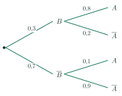
\(P(\overline A\mid B)=1-P(A\mid B)=0.2\).
\(P(\overline A\mid B)=1-P(A\mid B)=0{,}2\).
C. Short AnswerC. Trả lời ngắn
\(P(B)=0.4\), \(P(A\mid B)=0.75\). Find \(P(A\cap B)\) (decimal).
Cho \(P(B)=0{,}4\), \(P(A\mid B)=0{,}75\). Tính \(P(A\cap B)\) (viết dạng thập phân).
Enter a number.
Nhập một số.
\(P(A\cap B)=P(B)P(A\mid B)=0.4\cdot0.75=0.3\).
\(P(A\cap B)=P(B)P(A\mid B)=0{,}4\cdot0{,}75=0{,}3\).
In a survey of 800 people, 50 tested positive, of whom 35 were actually sick. Find \(P(\text{sick}\mid+)\) (decimal).
Khảo sát 800 người: 50 người dương tính, trong đó 35 người thật sự mắc bệnh. Tính \(P(\text{bệnh}\mid+)\) (viết dạng thập phân).
Enter a number.
Nhập một số.
\(\dfrac{35}{50}=0.7\).
\(\dfrac{35}{50}=0{,}7\).
| Plays a sport | Does not | Total | |
|---|---|---|---|
| Grade 10 | \(10\) | \(7\) | \(17\) |
| Grade 11 | \(x\) | \(12\) | \(12+x\) |
| Total | \(10+x\) | \(19\) | \(29+x\) |
| Chơi thể thao | Không chơi | Tổng | |
|---|---|---|---|
| Khối 10 | \(10\) | \(7\) | \(17\) |
| Khối 11 | \(x\) | \(12\) | \(12+x\) |
| Tổng | \(10+x\) | \(19\) | \(29+x\) |
Enter a number.
Nhập một số.
\(\dfrac{x}{x+12}=\dfrac{2}{3}\Rightarrow x=24\).
\(\dfrac{x}{x+12}=\dfrac{2}{3}\Rightarrow x=24\).
A. Multiple ChoiceA. Trắc nghiệm nhiều lựa chọn
\(P(B)=0.8\), \(P(A\cap B)=0.6\). \(P(A\mid B)=\)…
Cho \(P(B)=0{,}8\), \(P(A\cap B)=0{,}6\). Khi đó \(P(A\mid B)=\)…
Answer: b. \(\dfrac{P(A\cap B)}{P(B)}\).
Đáp án b. \(\dfrac{P(A\cap B)}{P(B)}=0{,}75\).
Of 30 boys, 9 wear glasses; of 40 girls, 15 wear glasses. A student wearing glasses is chosen. \(P(\text{girl})=\)…
Trong 30 nam có 9 em đeo kính; trong 40 nữ có 15 em đeo kính. Chọn một học sinh đeo kính. Xác suất đó là nữ là…
Answer: b. Among 24 with glasses, 15 are girls.
Đáp án b. Trong 24 em đeo kính có 15 em nữ.
4 red and 5 white balls; draw 2 without replacement. \(P(\text{both white})=\)…
Hộp có 4 bi đỏ và 5 bi trắng; lấy lần lượt 2 bi không hoàn lại. Xác suất cả hai bi trắng là…
Answer: c. \(\dfrac{5}{9}\cdot\dfrac{4}{8}\).
Đáp án c. \(\dfrac{5}{9}\cdot\dfrac{4}{8}\).
Read the tree diagram. The probability \(P(\overline B\cap\overline A)\) is…
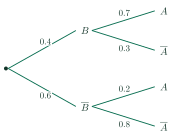
Đọc sơ đồ hình cây. Xác suất \(P(\overline B\cap\overline A)\) là…
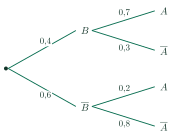
Answer: d. Multiply along the branch: \(P(\overline B\cap\overline A)=0.48\).
Đáp án d. Nhân các xác suất dọc theo nhánh: \(P(\overline B\cap\overline A)=0{,}48\).
A family has 4 children; boys and girls are equally likely. Given that there is at least one boy, the probability that there are at least 2 boys is…
Một gia đình có 4 con, khả năng sinh trai hay gái như nhau. Biết gia đình có ít nhất một con trai, xác suất có ít nhất 2 con trai là…
Answer: b. \(n(B)=15\) of the \(16\) equally likely families; \(n(A\cap B)=11\): \(P=\dfrac{11}{15}\).
Đáp án b. \(n(B)=15\) trong \(16\) khả năng; \(n(A\cap B)=11\): \(P=\dfrac{11}{15}\).
| Reads e-books | Does not | Total | |
|---|---|---|---|
| Grade 10 | \(18\) | \(19\) | \(37\) |
| Grade 11 | \(18\) | \(19\) | \(37\) |
| Total | \(36\) | \(38\) | \(74\) |
| Đọc sách điện tử | Không đọc | Tổng | |
|---|---|---|---|
| Khối 10 | \(18\) | \(19\) | \(37\) |
| Khối 11 | \(18\) | \(19\) | \(37\) |
| Tổng | \(36\) | \(38\) | \(74\) |
Answer: d. \(P(A)=\dfrac{36}{74}=\dfrac{18}{37}\), \(P(A\mid B)=\dfrac{18}{37}=\dfrac{18}{37}\).
Đáp án d. \(P(A)=\dfrac{36}{74}=\dfrac{18}{37}\), \(P(A\mid B)=\dfrac{18}{37}=\dfrac{18}{37}\).
B. True or FalseB. Đúng hoặc sai
\(P(A\cap B)=P(A)\cdot P(B\mid A)\).
\(P(A\cap B)=P(A)\cdot P(B\mid A)\).
Multiplication rule.
Công thức nhân xác suất.
If \(P(A\mid B)=0.6\) then \(P(A\cap B)=0.6\).
Nếu \(P(A\mid B)=0{,}6\) thì \(P(A\cap B)=0{,}6\).
\(P(A\cap B)=0.6\,P(B)\), smaller unless \(P(B)=1\).
\(P(A\cap B)=0{,}6\,P(B)\), nhỏ hơn 0,6 trừ khi \(P(B)=1\).
The tree diagram gives \(P(\overline A\mid B)=0.4\).
Sơ đồ hình cây cho \(P(\overline A\mid B)=0{,}4\).
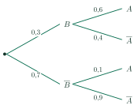
\(P(\overline A\mid B)=1-P(A\mid B)=0.4\).
\(P(\overline A\mid B)=1-P(A\mid B)=0{,}4\).
C. Short AnswerC. Trả lời ngắn
\(P(B)=0.5\), \(P(A\mid B)=0.4\). Find \(P(A\cap B)\) (decimal).
Cho \(P(B)=0{,}5\), \(P(A\mid B)=0{,}4\). Tính \(P(A\cap B)\) (viết dạng thập phân).
Enter a number.
Nhập một số.
\(P(A\cap B)=P(B)P(A\mid B)=0.5\cdot0.4=0.2\).
\(P(A\cap B)=P(B)P(A\mid B)=0{,}5\cdot0{,}4=0{,}2\).
In a survey of 1000 people, 80 tested positive, of whom 52 were actually sick. Find \(P(\text{sick}\mid+)\) (decimal).
Khảo sát 1000 người: 80 người dương tính, trong đó 52 người thật sự mắc bệnh. Tính \(P(\text{bệnh}\mid+)\) (viết dạng thập phân).
Enter a number.
Nhập một số.
\(\dfrac{52}{80}=0.65\).
\(\dfrac{52}{80}=0{,}65\).
| Reads e-books | Does not | Total | |
|---|---|---|---|
| Grade 10 | \(5\) | \(6\) | \(11\) |
| Grade 11 | \(x\) | \(19\) | \(19+x\) |
| Total | \(5+x\) | \(25\) | \(30+x\) |
| Đọc sách điện tử | Không đọc | Tổng | |
|---|---|---|---|
| Khối 10 | \(5\) | \(6\) | \(11\) |
| Khối 11 | \(x\) | \(19\) | \(19+x\) |
| Tổng | \(5+x\) | \(25\) | \(30+x\) |
Enter a number.
Nhập một số.
\(\dfrac{x}{x+19}=\dfrac{2}{3}\Rightarrow x=38\).
\(\dfrac{x}{x+19}=\dfrac{2}{3}\Rightarrow x=38\).
D. Self-practice: Multiple ChoiceD. Tự luyện: trắc nghiệm
A student is chosen. \(G\): "the student is a girl"; \(K\): "the student wears glasses". The probability that a chosen girl wears glasses is…
Chọn một học sinh. \(G\): "học sinh là nữ"; \(K\): "học sinh đeo kính". Xác suất để một bạn nữ được chọn có đeo kính là…
Answer: b. The known event (the condition) is \(G\), so we need \(P(K\mid G)\).
Đáp án b. Biến cố đã biết (điều kiện) là \(G\) nên cần \(P(K\mid G)\).
| Uses the school bus | Does not | Total | |
|---|---|---|---|
| Grade 10 | \(19\) | \(14\) | \(33\) |
| Grade 11 | \(11\) | \(17\) | \(28\) |
| Total | \(30\) | \(31\) | \(61\) |
| Đi xe buýt của trường | Không đi | Tổng | |
|---|---|---|---|
| Khối 10 | \(19\) | \(14\) | \(33\) |
| Khối 11 | \(11\) | \(17\) | \(28\) |
| Tổng | \(30\) | \(31\) | \(61\) |
Answer: c. Given \(B\), only the 33 students of Grade 10 count: \(P(A\mid B)=\dfrac{19}{33}=\dfrac{19}{33}\).
Đáp án c. Khi biết \(B\), chỉ xét 33 học sinh khối 10: \(P(A\mid B)=\dfrac{19}{33}=\dfrac{19}{33}\).
A bag has 4 red and 2 blue balls. Two balls are drawn one after the other. Compare the probability that both are red when drawing with and without replacement.
Túi có 4 bi đỏ và 2 bi xanh. Lấy lần lượt hai bi. So sánh xác suất cả hai bi đỏ khi lấy có hoàn lại và không hoàn lại.
Answer: c. With: \(\left(\dfrac{4}{6}\right)^2\); without: \(\dfrac{4}{6}\cdot\dfrac{3}{5}\).
Đáp án c. Có hoàn lại: \(\left(\dfrac{4}{6}\right)^2\); không hoàn lại: \(\dfrac{4}{6}\cdot\dfrac{3}{5}\).
\(P(A\cap B)=0.2\) and \(P(A\mid B)=0.4\). Then \(P(B)=\)…
\(P(A\cap B)=0{,}2\) và \(P(A\mid B)=0{,}4\). Khi đó \(P(B)=\)…
Answer: d. \(P(B)=\dfrac{P(A\cap B)}{P(A\mid B)}=0.5\).
Đáp án d. \(P(B)=\dfrac{P(A\cap B)}{P(A\mid B)}=0{,}5\).
A box has 7 red and 3 white balls. Three balls are drawn one by one without replacement. The probability that all three are red is…
Hộp có 7 bi đỏ và 3 bi trắng. Lấy lần lượt ba bi không hoàn lại. Xác suất cả ba bi đều đỏ là…
Answer: a. \(\dfrac{7}{10}\cdot\dfrac{6}{9}\cdot\dfrac{5}{8}=\dfrac{7}{24}\).
Đáp án a. \(\dfrac{7}{10}\cdot\dfrac{6}{9}\cdot\dfrac{5}{8}=\dfrac{7}{24}\).
\(P(A)=0.4\), \(P(B\mid A)=0.8\), \(P(B)=0.5\). Then \(P(A\cup B)=\)…
\(P(A)=0{,}4\), \(P(B\mid A)=0{,}8\), \(P(B)=0{,}5\). Khi đó \(P(A\cup B)=\)…
Answer: a. \(P(A\cap B)=P(A)P(B\mid A)=0.32\); \(P(A\cup B)=0.4+0.5-0.32=0.58\).
Đáp án a. \(P(A\cap B)=P(A)P(B\mid A)=0{,}32\); \(P(A\cup B)=0{,}4+0{,}5-0{,}32=0{,}58\).
\(A\) and \(B\) are mutually exclusive with \(P(A)=0.2\), \(P(B)=0.4\). Which statement is correct?
\(A\), \(B\) xung khắc với \(P(A)=0{,}2\), \(P(B)=0{,}4\). Khẳng định nào đúng?
Answer: a. \(P(A\cap B)=0\Rightarrow P(A\mid B)=0\ne P(A)\).
Đáp án a. \(P(A\cap B)=0\Rightarrow P(A\mid B)=0\ne P(A)\).
The Venn diagram shows the students of a class: \(M\) = Math club, \(E\) = English club. A student of the English club is chosen. The probability that the student is also in the Math club is…
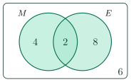
Biểu đồ Venn mô tả học sinh một lớp: \(M\) là CLB Toán, \(E\) là CLB Tiếng Anh. Chọn một học sinh thuộc CLB Tiếng Anh. Xác suất học sinh đó cũng thuộc CLB Toán là…
Answer: d. Given \(E\): \(2+8=10\) people, \(2\) of them in \(M\): \(P=\dfrac{1}{5}\).
Đáp án d. Khi biết \(E\): có \(2+8=10\) người, trong đó \(2\) người thuộc \(M\): \(P=\dfrac{1}{5}\).
D. Self-practice: Multiple ChoiceD. Tự luyện: trắc nghiệm
A person is chosen. \(S\): "the person is a smoker"; \(H\): "the person has a cough". The probability that a smoker has a cough is…
Chọn một người. \(S\): "người đó hút thuốc"; \(H\): "người đó bị ho". Xác suất một người hút thuốc bị ho là…
Answer: d. The known event (the condition) is \(S\), so we need \(P(H\mid S)\).
Đáp án d. Biến cố đã biết (điều kiện) là \(S\) nên cần \(P(H\mid S)\).
| Plays a sport | Does not | Total | |
|---|---|---|---|
| Grade 10 | \(25\) | \(5\) | \(30\) |
| Grade 11 | \(13\) | \(20\) | \(33\) |
| Total | \(38\) | \(25\) | \(63\) |
| Chơi thể thao | Không chơi | Tổng | |
|---|---|---|---|
| Khối 10 | \(25\) | \(5\) | \(30\) |
| Khối 11 | \(13\) | \(20\) | \(33\) |
| Tổng | \(38\) | \(25\) | \(63\) |
Answer: c. Given \(B\), only the 30 students of Grade 10 count: \(P(A\mid B)=\dfrac{25}{30}=\dfrac{5}{6}\).
Đáp án c. Khi biết \(B\), chỉ xét 30 học sinh khối 10: \(P(A\mid B)=\dfrac{25}{30}=\dfrac{5}{6}\).
A class has 6 boys and 3 girls. Two names are picked one after the other for two duties. Compare the probability that both are boys if the same name may (or may not) be picked twice.
Lớp có 6 nam và 3 nữ. Chọn lần lượt hai tên cho hai nhiệm vụ. So sánh xác suất cả hai là nam khi một tên được (hoặc không được) chọn lại.
Answer: a. With: \(\left(\dfrac{6}{9}\right)^2\); without: \(\dfrac{6}{9}\cdot\dfrac{5}{8}\).
Đáp án a. Có hoàn lại: \(\left(\dfrac{6}{9}\right)^2\); không hoàn lại: \(\dfrac{6}{9}\cdot\dfrac{5}{8}\).
Given \(P(A\mid B)=0.8\) and \(P(A\cap B)=0.64\), find \(P(B)\).
Cho \(P(A\mid B)=0{,}8\) và \(P(A\cap B)=0{,}64\). Tìm \(P(B)\).
Answer: b. \(P(B)=\dfrac{P(A\cap B)}{P(A\mid B)}=0.8\).
Đáp án b. \(P(B)=\dfrac{P(A\cap B)}{P(A\mid B)}=0{,}8\).
Among 5 good and 5 faulty phones, three are tested one after another (not returned). The probability that all three are good is…
Trong 5 điện thoại tốt và 5 điện thoại lỗi, kiểm tra lần lượt ba chiếc (không trả lại). Xác suất cả ba chiếc đều tốt là…
Answer: c. \(\dfrac{5}{10}\cdot\dfrac{4}{9}\cdot\dfrac{3}{8}=\dfrac{1}{12}\).
Đáp án c. \(\dfrac{5}{10}\cdot\dfrac{4}{9}\cdot\dfrac{3}{8}=\dfrac{1}{12}\).
The probability of rain is 0.2; if it rains, the football match is canceled with probability 0.4; overall a match is canceled with probability 0.3. The probability that it rains or the match is canceled is…
Xác suất trời mưa là 0{,}2; nếu mưa thì trận bóng bị hoãn với xác suất 0{,}4; xác suất trận bóng bị hoãn là 0{,}3. Xác suất trời mưa hoặc trận bóng bị hoãn là…
Answer: d. \(P(A\cap B)=P(A)P(B\mid A)=0.08\); \(P(A\cup B)=0.2+0.3-0.08=0.42\).
Đáp án d. \(P(A\cap B)=P(A)P(B\mid A)=0{,}08\); \(P(A\cup B)=0{,}2+0{,}3-0{,}08=0{,}42\).
Two events that cannot happen together have \(P(A)=0.2\), \(P(B)=0.4\). Choose the true statement.
Hai biến cố không thể cùng xảy ra có \(P(A)=0{,}2\), \(P(B)=0{,}4\). Chọn khẳng định đúng.
Answer: a. \(P(A\cap B)=0\Rightarrow P(A\mid B)=0\ne P(A)\).
Đáp án a. \(P(A\cap B)=0\Rightarrow P(A\mid B)=0\ne P(A)\).
In the Venn diagram (\(F\): Football, \(C\): Badminton), find the probability that a person who likes badminton also likes football.
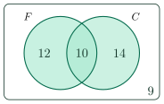
Trong biểu đồ Venn (\(F\): Bóng đá, \(C\): Cầu lông), tính xác suất một người thích cầu lông cũng thích bóng đá.
Answer: b. Given \(C\): \(10+14=24\) people, \(10\) of them in \(F\): \(P=\dfrac{5}{12}\).
Đáp án b. Khi biết \(C\): có \(10+14=24\) người, trong đó \(10\) người thuộc \(F\): \(P=\dfrac{5}{12}\).
D. Self-practice: Multiple ChoiceD. Tự luyện: trắc nghiệm
A day is chosen. \(R\): "the day is rainy"; \(L\): "the bus is late". On a rainy day, the probability that the bus is late is…
Chọn một ngày. \(R\): "ngày đó mưa"; \(L\): "xe buýt đến muộn". Vào một ngày mưa, xác suất xe buýt đến muộn là…
Answer: d. The known event (the condition) is \(R\), so we need \(P(L\mid R)\).
Đáp án d. Biến cố đã biết (điều kiện) là \(R\) nên cần \(P(L\mid R)\).
| Reads e-books | Does not | Total | |
|---|---|---|---|
| Grade 10 | \(15\) | \(21\) | \(36\) |
| Grade 11 | \(19\) | \(9\) | \(28\) |
| Total | \(34\) | \(30\) | \(64\) |
| Đọc sách điện tử | Không đọc | Tổng | |
|---|---|---|---|
| Khối 10 | \(15\) | \(21\) | \(36\) |
| Khối 11 | \(19\) | \(9\) | \(28\) |
| Tổng | \(34\) | \(30\) | \(64\) |
Answer: d. Given \(B\), only the 36 students of Grade 10 count: \(P(A\mid B)=\dfrac{15}{36}=\dfrac{5}{12}\).
Đáp án d. Khi biết \(B\), chỉ xét 36 học sinh khối 10: \(P(A\mid B)=\dfrac{15}{36}=\dfrac{5}{12}\).
A box has 7 good and 4 faulty bulbs. Two bulbs are tested one after the other. Compare the probability that both are good with and without putting the first bulb back.
Hộp có 7 bóng tốt và 4 bóng hỏng. Thử lần lượt hai bóng. So sánh xác suất cả hai bóng tốt khi có và không trả bóng đầu tiên lại.
Answer: a. With: \(\left(\dfrac{7}{11}\right)^2\); without: \(\dfrac{7}{11}\cdot\dfrac{6}{10}\).
Đáp án a. Có hoàn lại: \(\left(\dfrac{7}{11}\right)^2\); không hoàn lại: \(\dfrac{7}{11}\cdot\dfrac{6}{10}\).
If \(P(A\cap B)=0.18\), \(P(A\mid B)=0.6\), the probability of \(B\) is…
Nếu \(P(A\cap B)=0{,}18\), \(P(A\mid B)=0{,}6\) thì xác suất của \(B\) là…
Answer: c. \(P(B)=\dfrac{P(A\cap B)}{P(A\mid B)}=0.3\).
Đáp án c. \(P(B)=\dfrac{P(A\cap B)}{P(A\mid B)}=0{,}3\).
A team of 7 boys and 5 girls picks three captains one after another. The probability that all three are boys is…
Một đội gồm 7 nam và 5 nữ chọn lần lượt ba đội trưởng. Xác suất cả ba đều là nam là…
Answer: c. \(\dfrac{7}{12}\cdot\dfrac{6}{11}\cdot\dfrac{5}{10}=\dfrac{7}{44}\).
Đáp án c. \(\dfrac{7}{12}\cdot\dfrac{6}{11}\cdot\dfrac{5}{10}=\dfrac{7}{44}\).
A student revises with probability 0.3; given that he revises, he passes with probability 0.6; he passes with probability 0.3. The probability that he revises or passes is…
Một học sinh ôn bài với xác suất 0{,}3; nếu ôn bài thì đạt với xác suất 0{,}6; xác suất đạt là 0{,}3. Xác suất học sinh ôn bài hoặc đạt là…
Answer: d. \(P(A\cap B)=P(A)P(B\mid A)=0.18\); \(P(A\cup B)=0.3+0.3-0.18=0.42\).
Đáp án d. \(P(A\cap B)=P(A)P(B\mid A)=0{,}18\); \(P(A\cup B)=0{,}3+0{,}3-0{,}18=0{,}42\).
If \(A\cap B=\varnothing\), \(P(A)=0.4\) and \(P(B)=0.5\), then…
Nếu \(A\cap B=\varnothing\), \(P(A)=0{,}4\), \(P(B)=0{,}5\) thì…
Answer: b. \(P(A\cap B)=0\Rightarrow P(A\mid B)=0\ne P(A)\).
Đáp án b. \(P(A\cap B)=0\Rightarrow P(A\mid B)=0\ne P(A)\).
Using the Venn diagram (\(T\): Tea; \(C\): Coffee), \(P(T\mid C)=\)…
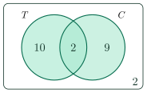
Dựa vào biểu đồ Venn (\(T\): Trà; \(C\): Cà phê), \(P(T\mid C)=\)…
Answer: c. Given \(C\): \(2+9=11\) people, \(2\) of them in \(T\): \(P=\dfrac{2}{11}\).
Đáp án c. Khi biết \(C\): có \(2+9=11\) người, trong đó \(2\) người thuộc \(T\): \(P=\dfrac{2}{11}\).
8Common MistakesLỗi thường gặp
Dividing by \(n(\Omega)\) instead of \(n(B)\). Given \(B\), the sample space is \(B\).
Chia cho \(n(\Omega)\) thay vì \(n(B)\). Khi biết \(B\), không gian mẫu là \(B\).
Mixing up \(P(A\mid B)\) and \(P(B\mid A)\). Ask: which event is known?
Nhầm \(P(A\mid B)\) với \(P(B\mid A)\). Tự hỏi: biến cố nào đã biết?
Forgetting that the box changes without replacement.
Quên rằng hộp thay đổi khi lấy không hoàn lại.
Thinking "independent" = "mutually exclusive". Exclusive events with positive probabilities are never independent.
Nghĩ "độc lập" là "xung khắc". Hai biến cố xung khắc có xác suất dương thì không độc lập.
9Lesson SummaryTổng kết
\(P(A\mid B)=\dfrac{P(A\cap B)}{P(B)}=\dfrac{n(A\cap B)}{n(B)}\) (equally likely outcomes).
\(P(A\mid B)=\dfrac{P(A\cap B)}{P(B)}=\dfrac{n(A\cap B)}{n(B)}\) (kết quả đồng khả năng).
\(P(A\cap B)=P(B)P(A\mid B)\); \(P(\overline A\mid B)=1-P(A\mid B)\).
\(P(A\cap B)=P(B)P(A\mid B)\); \(P(\overline A\mid B)=1-P(A\mid B)\).
\(A\), \(B\) independent \(\iff P(A\mid B)=P(A)\iff P(A\cap B)=P(A)P(B)\).
\(A\), \(B\) độc lập \(\iff P(A\mid B)=P(A)\iff P(A\cap B)=P(A)P(B)\).
Key words: conditional probability, given, multiplication rule, independent, without replacement.
Từ cần nhớ (chạm vào để xem tiếng Anh): xác suất có điều kiện; biết rằng; công thức nhân xác suất; độc lập; không hoàn lại.